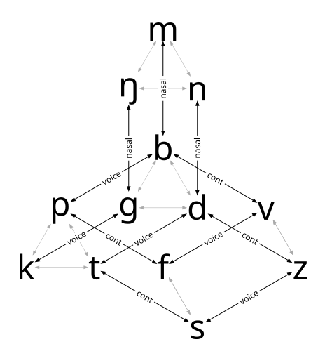
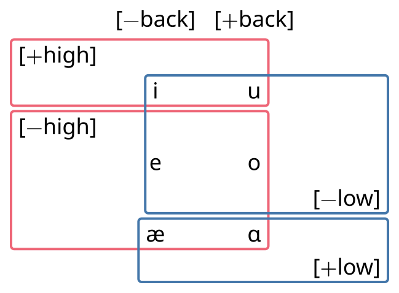
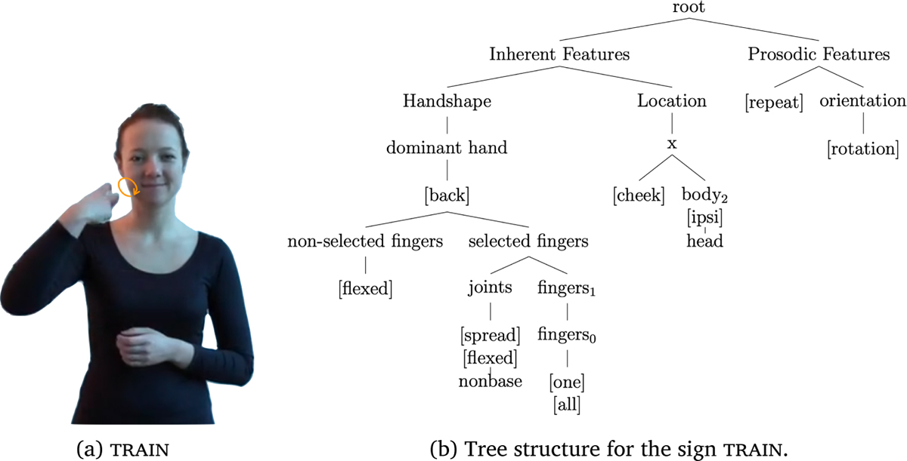

Distinctive Features
Phonemes - Contrast
p ≠ b
pin
nap
tripe
bin
nab
tribe
Phonemes - Contrast
l ≠ p
lick
pipe
pine
pick
pile
line
Phonemes Contrast
t ≠ d
time
bit
tome
dime
bid
dome
Phonemes - Contrast
Is the way that
p ≠ b
more similar to how
l ≠ p
or to to how
t ≠ d
?
Phonemes - Contrast
If all contrasts are the same, then…
Distinctive Features

Distinctive Features
Each phoneme is represented as the set of distinctive features that distinguishes it from all other phonemes
Distinctive Features
A “fully specified” phone has every possible feature specified
Distinctive Features
Distinctive Features
A set of distinctive features describes a natural class
Distinctive features
The fewer the features, the larger the class
Distinctive Features - Universal?
There are conventionalized names for most distinctive features, and some researchers suggest there is a universal set of features that each language can draw from.
Distinctive Features - Notation
“Binary” features
“Monovalent” features
Major Class
- [± syllabic]
-
[+] = Can be nucleus of a syllable.
- [± consonantal]
-
[-] = No significant oral tract constrictions. (Often shortened to “V” and “C”)
Major Class
| [-syllabic] | [+syllabic] | |
|---|---|---|
| [+consonantal] | Your typical C | [bʌʔn̩, wɔtɹ̩] |
| [-consonantal] | [jɛs] | Your typical V |
Manner
- [±sonorant]
-
[-] = build up of pressure behind oral constriction
- [±continuant]
-
[-] = complete closure
- [±nasal]
-
[+] = open velum
- [±lateral]
-
[+] = closure down the center, open to the sides
Manner
| [+sonorant] | [-sonorant] | |
|---|---|---|
| [+continuant] | glides, approximants | fricatives |
| [-continuant] | nasal stops | oral stops |
Laryngeal Features
- [±voice]
-
[+] = vocal fold vibration
- [SpreadGlottis]
-
Large glottal opening
- [ConstrictedGlottis]
-
Constricted vocal folds
Laryngeal Features
| [SG] | ||
|---|---|---|
| [+voice] | [b, d, g] | [bʱ, dʱ, gʱ] (breathy) |
| [-voice] | [p, t, k] | [pʰ, tʰ, kʰ] |
“Laryngeal Realism”
Some people argue that [±voice] is actually [Voice].
English
| Features | Segments |
|---|---|
| [] | /b, d, g/ |
| [SG] | /p, t, k/ |
Dutch
| Features | Phonemes |
|---|---|
| [Voice] | /b, d, g/ |
| [] | /p, t, k/ |
Underspecification
Not every phoneme that has phonetic voicing is necessarily [+voice]. e.g. anything [+sonorant] might get voicing “for free.”
Underspecification
washed
washed
Underspecification
bold
bolt
Major Place Features
All privative or monovalent features
- [Labial]
-
Involving the lips.
- [Coronal]1
-
Front part of the tongue
- [Dorsal]2
-
Back part of the tongue
- [Pharyngeal]
-
Involving the pharynx
- [Laryngeal]
-
Constriction at the glottis
Subsidary Place Features
The broad strokes place features can’t capture all contrastive places differences
Vowels
Vowels are all going to be
Vowels

Vowels
[±round]
| [-round] | [+round] |
|---|---|
| ʌ | o |
| ɑ | ɔ |
[±ATR] or [±tense]
| [+ATR] | [-ATR] |
|---|---|
| i | ɪ |
| e | ɛ |
| u | ʊ |
Feature Theories
Sometimes, the feature set we have isn’t quite adequate.
In Philadelphia, /æ/ gets tensed before the following segments in red:
| p | t | k | ||
| b | d | g | ||
| f | θ | s | ʃ | |
| v | ð | z | ʒ | |
| m | n | ŋ |
Feature Theories
Signed languages also have distinctive features

“TRAIN” in French Sign Language (Mertz et al. 2022)
Using Distinctive Features
Turkish Vowel Harmony
| translation | nominative | accusative |
|---|---|---|
| wind | jel | jel-i |
| tooth | diʃ | diʃ-i |
| rose | gyl | gyl-y |
| sea | gøl | gøl-y |
| girl | kɯz | kɯz-ɯ |
| branch | dɑl | dɑl-ɯ |
| arm | kol | kol-u |
Using Distinctive Features
Turkish Vowel Harmony
Accusative morpheme: [+high]
Assimilates to the preceding vowel for [±back] and [±round]